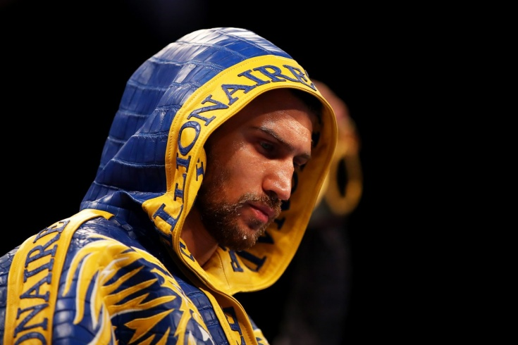
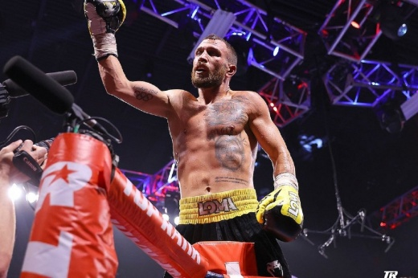
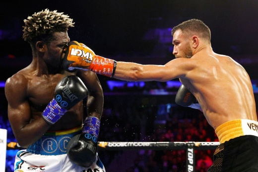

Несправедливость года. Один из лучших боксёров мира по-прежнему не чемпион
Ломаченко доказывает, что ему нет равных, но молодые звёзды ждут, когда он состарится.
2021 год показал, что в мире спорта по-прежнему хватает несправедливости. Здесь можно вспомнить и инцидент с сёстрами Авериными на Олимпиаде в Токио, и победу Лионеля Месси в голосовании за «Золотой мяч», и странную потерю титула Пётром Яном в бою с Алджэмейном Стерлингом. Безусловно, не обошлось без несправедливости и во все времена скандальном мире бокса. Здесь она ярко проявилась по отношению к одному из лучших боксёров на планете Василию Ломаченко. По завершении года аккерманец остался без звания чемпиона мира.
Бой с Накатани
Для украинца год начинался очень тяжело. В первые месяцы 2021 года он продолжал восстанавливаться после очередной операции на плече и совсем пропал из медиапространства. Очевидно, что он также переживал и переваривал второе поражение в профессиональной карьере, которое он потерпел в конце 2020 года от Теофимо Лопеса и в результате которого потерял все титулы. Обидчик украинца упивался успехом, злорадствовал, подчёркивал, что не собирается давать реванш, и раздувал историю с якобы глубочайшей депрессией Ломы.
В общем, у армии болельщиков Василия были поводы для переживаний. Тем не менее весной стало понятно, что следующий бой он проведёт с высоченным Масаёси Накатани. В целом это был хороший вариант для возвращения. Неуступчивый и очень неудобный японец когда-то дал отличный бой Теофимо Лопесу, заставив того потеть все 12 раундов впервые в карьере. Так что это был оптимальный вариант. Не слишком проходной, плюс здесь был момент для сравнения Лопеса и Ломаченко. Сам Василий незадолго до схватки также советовал болельщикам и экспертам сравнить его выступление с Накатани с поединком японца с Теофимо.
Ломаченко-НакатаниОказалось, что к проведению сравнений и аналогий аккерманец призывал не зря. В отличие от своего заклятого соперника, Василий почти сразу раскусил Накатани. Лома прибавлял от раунда к раунду, и должно быть лишь богу известно, за счёт чего Масаёси, пропуская столько акцентированных ударов, продолжал стоять. В пятой трёхминутке японец оказался в нокдауне, а в девятом рефери сжалился над ним и остановил одностороннее избиение. Это был блестящий перформанс от Ломаченко.
тец Теофимо Лопеса находился в зале и был настолько поражён филигранными действиями украинца, что отвесил в его адрес кучу комплиментов и заверил, что реванш его сына с Василием непременно состоится. Но, забегая вперёд, отметим, что слова Лопесов, как это часто бывает, разошлись с действиями.
Встреча с Ричардом Комми
В декабре 2021 года Василий провёл второй поединок в году. Его соперником стал ещё один бывший соперник Теофимо Лопеса, экс-чемпион мира Ричард Комми. На эту схватку Лома выходил уже в совершенно иной атмосфере. Во-первых, июньская победа над Накатани вселила уверенность в том, что Василий по-прежнему на пике, во-вторых, за пару недель до боя с Комми в лёгком весе произошла настоящая сенсация. Теофимо Лопес провалил первую же защиту титулов. Американец гондурасского происхождения проиграл в настоящем триллере Джорджу Камбососу и лишился всех титулов.
Ломаченко-КоммиВсе мы люди и понимаем, что неудача столь неприятного для Ломаченко соперника, как Лопес, не могла не прибавить Василию настроения. Почему? Дело не только в неприязненных отношениях, а и в том, что Лопес снова и снова пел старую песню о том, что не даст Василию реванш. Теперь же со сменой короля дивизиона перед аккерманцем стояла задача просто победить и надеяться, что после этого в плане титульных боёв всё наладится. Со своей стороны Ломаченко всё сделал идеально. События поединка с Комми ещё слишком свежи в памяти, чтобы повторяться. Ричард был разгромлен. Но по части титульных поединков не всё однозначно, и вот тут-то мы и подходим к главной несправедливости.
Камбосос не хочет боя с Ломаченко
Автор главной сенсации года Джордж Камбосос пока не прояснил своих намерений на все 100%. Понятно лишь одно – первую защиту звания абсолютного чемпиона мира он хочет провести в Австралии. А вот кто будет соперником, неясно. Новоиспечённый чемпион словно пытается понравиться всем. Он говорит и о Дэвине Хэйни, и о Василии Ломаченко, и о Джервонте Дэвисе.
Но в первых интервью после победы над Лопесом Джордж вообще не упоминал украинца, тем самым давая понять, что вовсе не хочет боя с ним. Приоритетный вариант для Джорджа – схватка с Хэйни. Во-первых, оба боксёра сотрудничают с сервисом DAZN, а значит, организовать их схватку будет просто. Во-вторых, объективно Хэйни видится Камбососу более съедобным соперником, чем 33-летний украинец
По сути, о поединке с Ломаченко Камбосос, вероятнее всего, стал говорить для отвода глаз, понимая, что украинец в любом случае претендент номер один почти по всем версиям. Единственное преимущество Хэйни в том, что из-за странных инициатив WBC в организации теперь существует два титула чемпиона мира и, чтобы снять все формальные вопросы, провести схватку Хэйни – Камбосос было бы интересно.
Как бы то ни было, всё это приводит к тому, что мы видим главную несправедливость года в боксе в 2021 году. Один из лучших боксёров планеты Василий Ломаченко, а таковым его считает подавляющее большинство, остаётся без титула чемпиона мира. Против украинца играют и политика организаций, и проделки Теофимо Лопеса (отказавшегося дать немедленный реванш), и неспособность разных промоутеров прийти к общему знаменателю
Кроме того, нужно понимать, что молодые звёзды дивизиона в лице Райана Гарсии, Дэвина Хэйни и Джервонты Дэвиса будут максимально затягивать проведение схватки с Василием, чтобы дождаться спортивной старости украинца.
Что будет дальше?
Это самый интересный вопрос. С одной стороны, Василий сейчас занимает первое место в рейтингах по версиям WBC и WBO, а значит, де-факто является претендентом на титул. Также он четвёртый в рейтинге WBA и шестой в рейтинге IBF (где каким-то образом уступает даже Ричарду Комми).
В общем-то, украинец везде в топе и может претендовать на любой из поясов. Но, как говорилось выше, в WBC не возражали бы против схватки Хэйни и Камбососа. Таким образом, надежда остаётся на WBO. В Top Rank также делают акцент на том, что постараются для Василия продавить чемпионский бой в этой организации. Но с учётом того, что все пояса собраны в руках одного человека, не факт, что это удастся устроить до битвы Камбососа и Хэйни. В общем-то, всё максимально сложно.
Понятно одно: как бы не закончился возможный поединок Джорджа и Дэвина, его победитель уже не сможет убежать от Ломаченко. Вопрос лишь в том, сумеет ли Василий помешать организации дуэли Камбососа и Хэйни, и если нет, не рискует ли он остаться без боёв на долгие 8-10 месяцев. Ибо по большому счёту сейчас ему бить уже некого.
Выходить на бои с условными Гарсией и Дэвисом, находясь в шаге от титульного боя, смысла нет (всё-таки какую-никакую опасность они представляют), ну а остальные соперники в дивизионе для Ломаченко совсем уж проходные. Как бы то ни было, будем надеяться, что в 2022 году Василий восстановит справедливость и поднимет над головой титулы чемпиона мира.